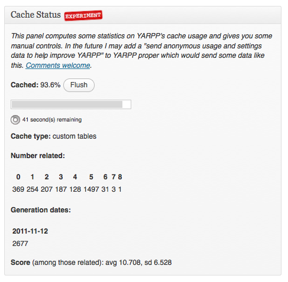
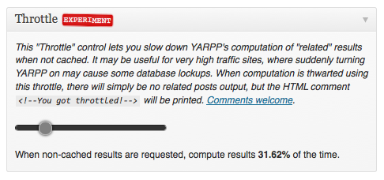
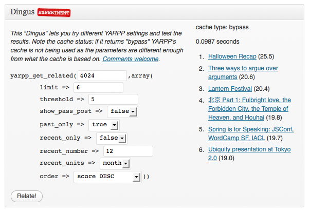

Earlier we shared about YARPP plugin, which is one of the best plugin for displaying related posts on your WordPress blog. This post is to discuss about another useful plugin by mitcho (Michael Yoshitaka Erlewine) called YARPP experiments.
Download Links:
Below are the few features of this plugin, which can help you to resolve YARPP issues if any.
Cache Status: It would show you the statistics like caching progress, cache build date etc. Also, gives you the control of flushing cache. This feature is not available in original plugin, this may be useful when you are running a big blog as the plugin may take time for the computing the related posts score for all of your posts, pages depending on the size of the blog/website.
Throttle: If you are running a huge blog with lots of posts then there may be a case when activating YARPP can cause database issues as YARPP would try to compute the related score for all of your posts. In such cases this plugin can be useful, you can throttle the related posts computation speed as per your choice, it should avoid any database issues which may occur while activating Yet another related posts plugin. Normally, for a medium sized blog, there is no need to configure the speed.
Dingus: It let’s you try different settings for YARPP as shown in the below snapshot. There are few settings, which you won’t find in the original plugin such as past only, recent only, recent number, recent units etc. You can use these extra settings if you want to. For example you want to display the past related posts only then you can set past_only to true, plugin will then display only those elated posts which have been published before the current post.
Pingback Control: Disable ping-backs to your own site from YARPP’s results.
Thumbnail Generation Control: Control the low-level “manually using thumbnails” option
Let us know how well this plugin is performing on your site. If you strongly believe that any other plugin is better than this, feel free to drop a comment below.
Leave a Reply